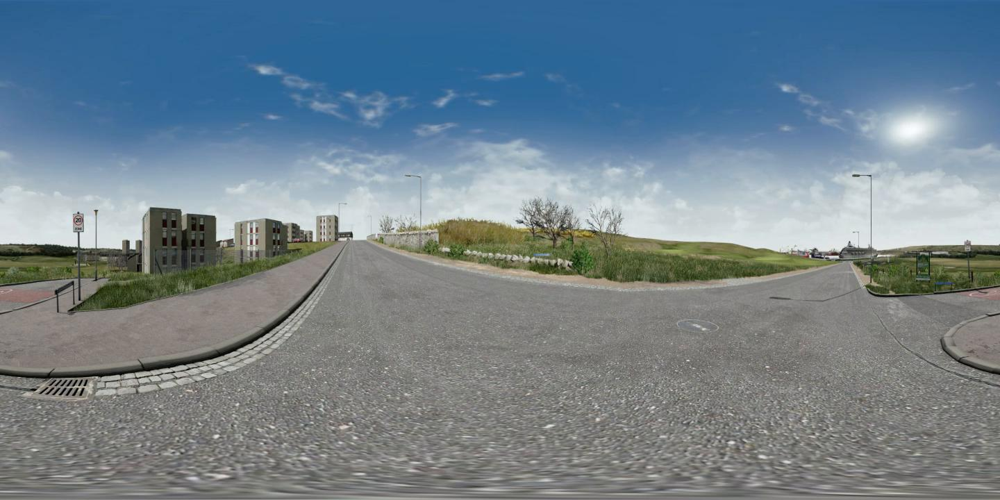
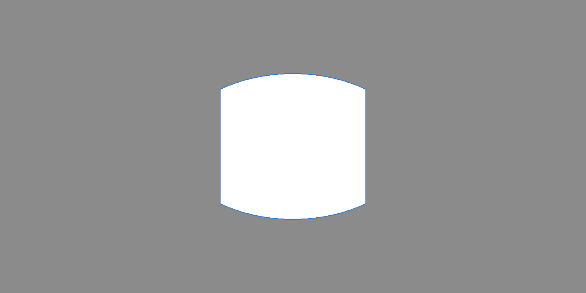
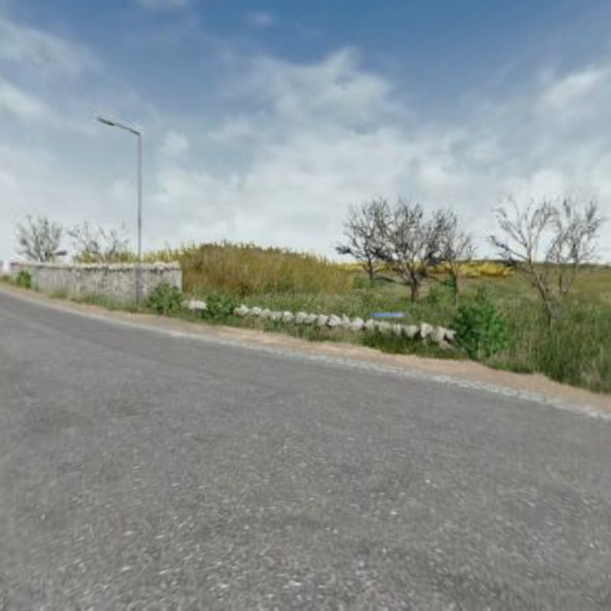

Case 1
A T-junction, misread as a straight road
What best describes the architectural topology of the road at the camera's location?
- AA 4-way intersection (crossroads)
- BA 5-way intersection
- CA straight unbroken road
- DA 3-way intersection (T-junction)✓



Shading marks the selected field of view; added for display.
Yaw 0° · pitch +0°


The 4B answer model receives this view without the ERP.
| Model | ERP baseline | PanoCompass input | PanoCompass answer |
|---|---|---|---|
| Qwen3.5-4B | Correct: D · A 3-way intersection (T-junction) | One perspective view | Incorrect: C · A straight unbroken road |
| Qwen3.5-27B | Correct: D · A 3-way intersection (T-junction) | Full ERP | Correct: D · A 3-way intersection (T-junction) |